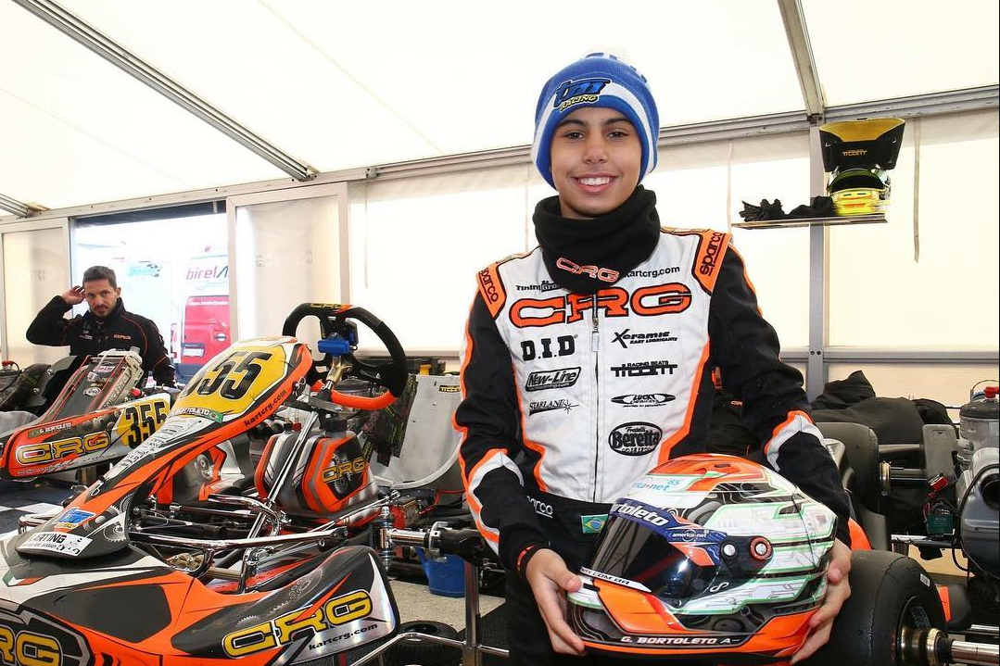
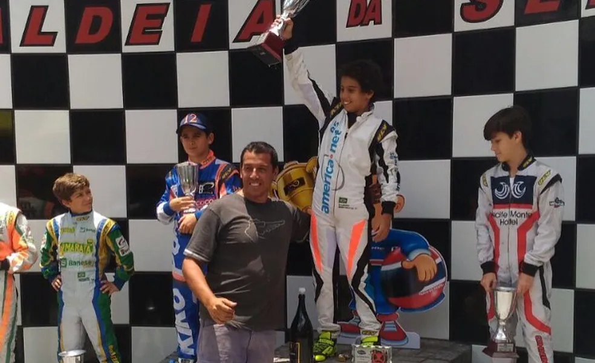
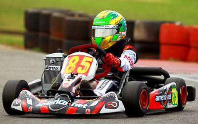
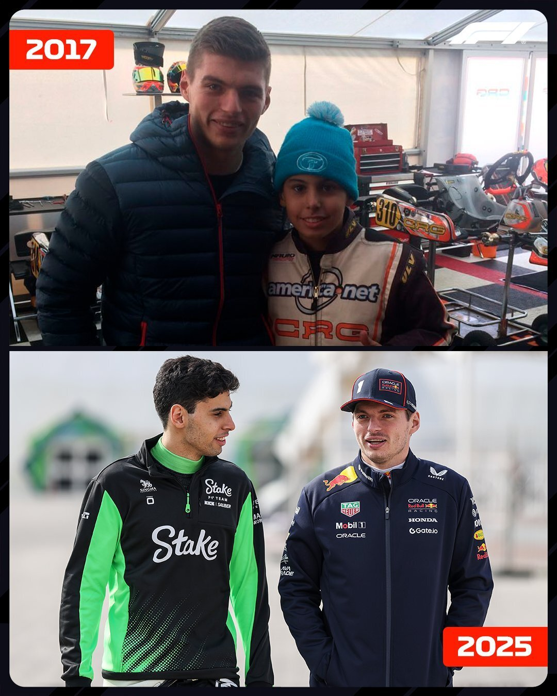

🏁 Início nas pistas: o Kart
Gabriel Bortoleto iniciou sua trajetória no automobilismo ainda criança, aos 8 anos de idade, quando começou a competir em provas de kart no Brasil. Natural de São Paulo, ele rapidamente demonstrou talento e espírito competitivo, vencendo corridas em campeonatos estaduais e nacionais.
🏆 Primeiros títulos no Brasil
Entre 2014 e 2015, Bortoleto se destacou em diversas categorias do kartismo brasileiro, como a Mirim e a Cadete. Seu desempenho chamou a atenção de equipes e profissionais da área, o que abriu portas para competir fora do país. Sua evolução precoce foi marcada por conquistas como a Copa São Paulo de Kart e o Campeonato Paulista de Kart, além de bons resultados no Campeonato Brasileiro de Kart.
🌍 Transição para o kartismo europeu
A partir de 2016, Gabriel iniciou sua carreira internacional, participando dos campeonatos mais disputados do mundo. Entre eles:
- WSK Champions Cup
- WSK Super Master Series
- WSK Final Cup
- CIK-FIA European Championship
- CIK-FIA World Championship
Essas competições reuniam os melhores talentos do mundo no kart, incluindo futuros pilotos da Fórmula 1, e Bortoleto não demorou para se destacar. Competindo por grandes equipes como CRG e Kart Republic, ele enfrentou adversários como Andrea Kimi Antonelli e Gabriele Minì — nomes que também subiram para as categorias de base da FIA.
🚀 Destaques na Europa
Em 2018, ele obteve resultados expressivos, como:
- Pódio na WSK Final Cup, na categoria OK Junior
- Vitórias em etapas da WSK Super Master Series
- Excelente desempenho nas classificações e baterias eliminatórias do Mundial de Kart CIK-FIA
Esses resultados confirmaram seu status como uma das principais promessas do automobilismo brasileiro e abriram as portas para sua migração ao monoposto.
📈 Base sólida para os monopostos
O kartismo foi fundamental para o desenvolvimento de Gabriel como piloto. Além da técnica refinada, ele desenvolveu inteligência de corrida, controle de pneus, e a habilidade de trabalhar sob pressão — competências que se refletiriam diretamente em sua rápida adaptação às categorias seguintes, como a Fórmula 4, Fórmula 3 e Fórmula 2.
